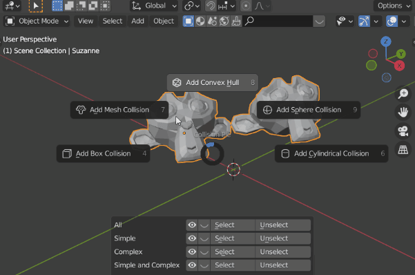

Quick and easy collider creation for games!
Warning
Version 1.1 is currently in the beta testing stage. Contact me if you bought the addon and want to help me test the next release version.
What is Collider Tools?
Collider Tools is a Blender addon to create physics colliders for games and real-time applications.
The addon offers a lot of tools for creating the most common collider types like Box, Sphere, Convex, Convex (cylindrical), Auto Convex (Windows only), Mesh and Oriented Minimum BBox quickly and easily within Blender. These colliders can then be imported to engines like UE, Unity, and others.
The addon offers big flexibility and controllability by using the selection, both in Object and Edit-mode, as well as offering settings like global or local space collider generation. Further, colliders can now be generated per object or around the entire selection.
Further, the addon supports the generation based on both the original mesh (pre-modifier stack) and the evaluated mesh (post-modifier stack). Collider Tools offers functionality for organizing the colliders, showing, hiding, and selecting them and tools to automatically generate multiple convex shapes to represent complex meshes (convex decomposition)
Video
Feature Overview
- Quick and simple creation of collider objects.
- Support for Sphere, Box, Convex, Convex Cylinder and Mesh shapes.
- Support for Oriented Minimum Bounding Box generation, an automatically oriented box collider to have the lowest volume possible. My implementation is based on code from Iyad Ahmed.
- Support for Object- and Edit-mode, including multi-object Edit-mode.
- Collider creation per individual object or around the entire selection.
- Custom colliders can be used in engines like UE4-5, Unity, and other engines with a flexible naming scheme.
- Support for Edit mode selection. Create collision only surrounding the selected geometry of each object. Works with multi-edit and modifier stack.
- Support for creating world-aligned and object-aligned collisions for Boxes and Cylinders.
- Support for collision creation based on pre or post-modifier stack mesh data.
- Change creation settings from the 3D Viewport. The collider creation works with modal operators, allowing for user input during the creation.
- Flexible naming options to support different engine and pipeline needs.
- Consistent and clean UI overlay in the 3D viewport during the collider creation.
- Assign materials to be used as physics materials in engines.
- Convert meshes to colliders and colliders to meshes.
- Regenerate Names to change the collider naming according to the current collider preset.
- Support for different collider groups: 3 Groups can be used to group, select and name colliders according to their functionality or just for overview.
- Support for Auto convex (Windows only), convex decomposition, collider creation using V-hacd library. Convex decomposition allows representing complex shapes with multiple convex shapes that could otherwise only be represented with Mesh collisions.


Why Collider Tools?
Collider tool removes the biggest obstacle for creating colliders in Blender, its lack of specialized tools. It makes the tedious and time-consuming process of creating colliders much faster and easier. Collider Tools combines the speed and comfort of in-engine tools like the UE collision tools with the power and flexibility of Blender.
There are reasons for using Collider Tools over in engine solutions:
- Creating the colliders in Blender with Collider Tools provides more control than in Engine tools. You can use the full power of Blender to manipulate, adjust the colliders if needed. This can be useful for all kinds of more complex shapes like railings, hollow objects, arches, etc.
- Creating Compound colliders (multiple colliders for one asset), is much faster with Collider tools than in engine tools since you can use the selection (Object and Edit Mode) for the collider generation.
- Not all engines over as powerful tools for creating colliders.
- Collider Tools is quick and easy and can be used to create all kinds of collisions from simple box colliders to very complex compound collider setups.
- It offers a simple UI and brings the important settings directly into the 3D Viewport, offering more adjustment options than in engine tools: decimate, shrink/flatten.
- It is convenient creating assets and colliders in one application. You can consider them early on and update both, assets and colliders at the same time if needed.
Testimonials
What other artists from the games industry say about collider tools:
 |
Richard Court - Senior Environment Artist | Studio Gobo
This is a must have addon, took all the hassle and tedious work out of creating custom collision. So fast and easy to use, takes care of naming/parenting with support for custom prefixes. |
 |
Jeremiah Estrellado / Lead Environment Artist / Founder of The Dinusty Empire
This is something that a lot of people overlook on how much time it can take up on a project. With how intuitive the tool is as well as being able to support much more complex shapes. its quite impressive how quickly you can get more the useable results. |
 |
Michael Kinsey - Tech Artist | Counterplay
I am a huge fan of addons that reduce the steps and amount of clicks it takes me to do menial tasks. This addon is one of those. Its simple and clean and will save a lot of time for anyone making collision meshes in Blender for use in game engines like Unreal Engine. I wish I had this addon a lot sooner! |
 |
Jérémy Cerisy - Environment Artist | Remedy Entertainment
I have been lucky enough to be able to try Collider Tools in the past months and I can tell you that it became directly one of my favorite and most used add-ons. Everything is just so simple and powerful. Now I can create collisions in a matter of seconds for any assets or modular kit and spent all this extra saved time on more creative and fulfilling tasks! |
 |
Arthur Chamerois - 3D Artist | Bulwark Studios Based on the fact that making collisions is one of the most annoying moments in an art pipeline, I think anyone working in real-time 3D deserves to get through this moment the proper way. That's what this addon allows 😃 |
Getting started
Download and Installation
Please purchase the Collider Tools from any of the previous stores.
After downloading, the addon can be installed by going to File > User Preferences > addons. Click at Install from File and specify the downloaded zip file in the newly opened window. Collider Tools should now appear in your addons window and can be activated. Please contact me in case you run into any issues here.